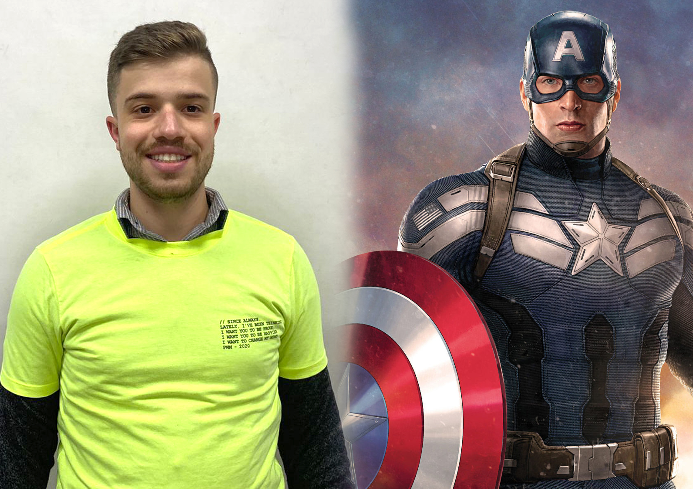
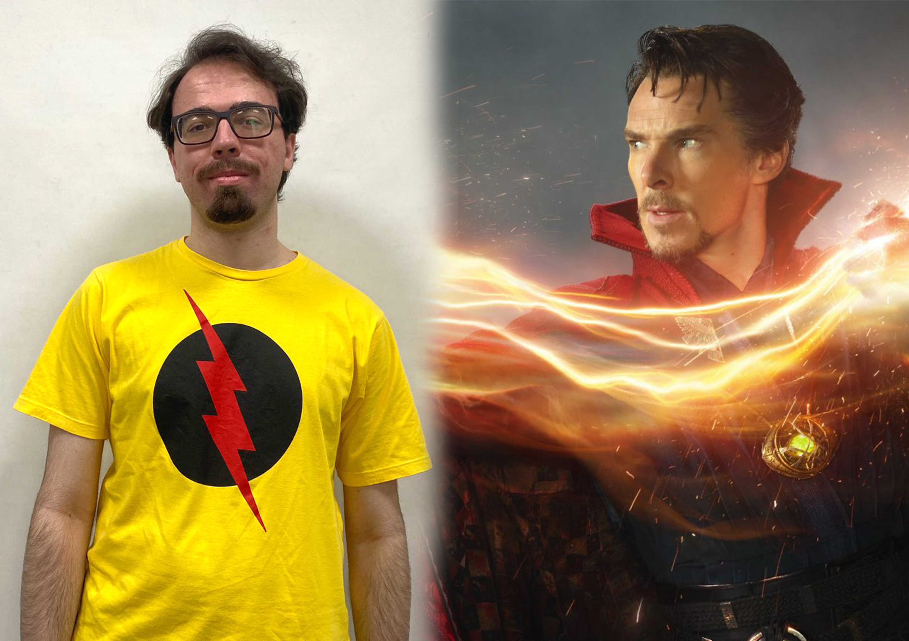
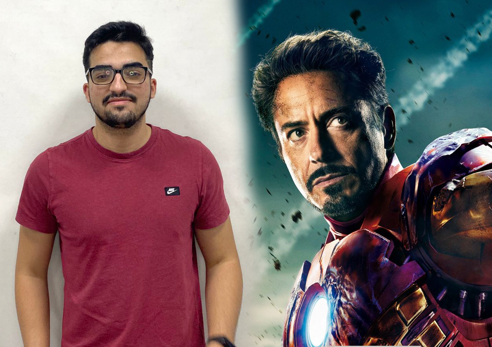
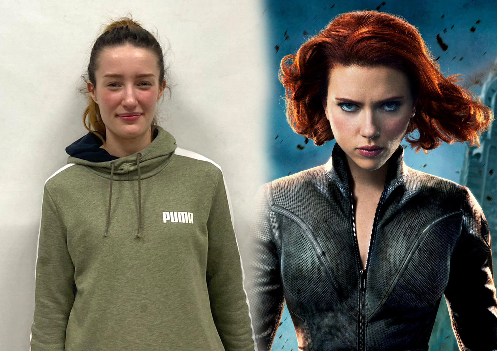
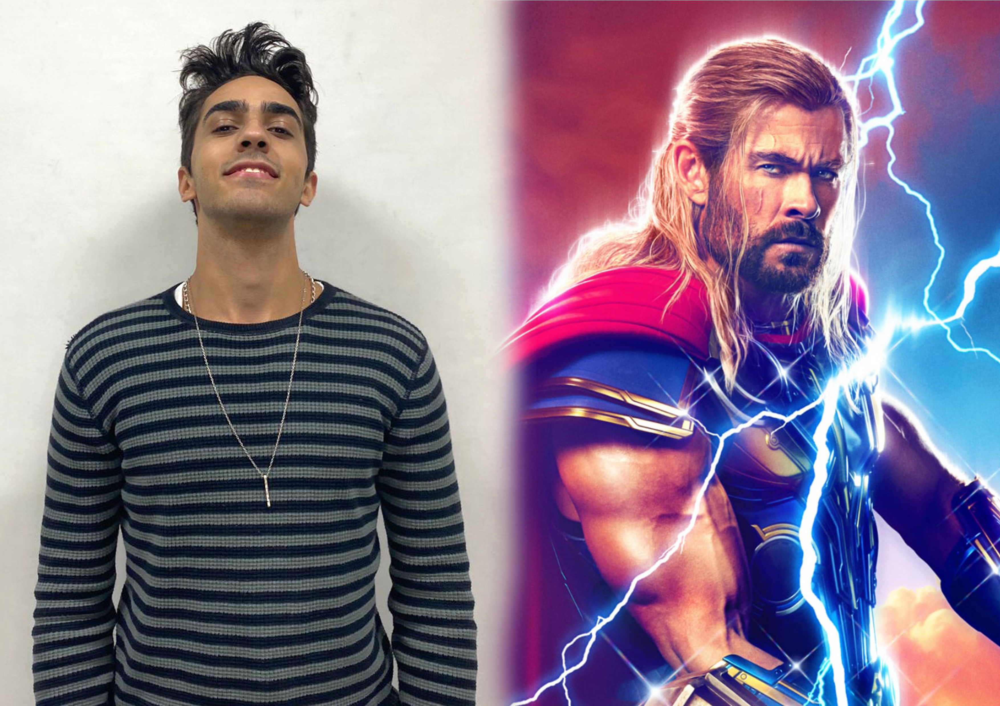

A seguir, tem-se o vídeo de apresentação da página gravado na câmera profissional, apresentado, respectivamente, nas resoluções 100%, 50% e 25%. A mudança de resolução foi feita utilizando o Adobe Premiere.
Por sua vez, tem-se o vídeo de apresentação gravado pelo celular, também apresentado nas resoluções 100%, 50% e 25%.
Fotos com a câmera profissional
As fotos a seguir foram tiradas com a câmera profissional, e suas versões em preto e branco foram geradas diretamente via CSS, utilizando o código:
A seguir são apresentadas as montagens elaboradas com o Photoshop, e utilizando as fotos tiradas pelo celular e os ícones-avatares escolhidos. Também tem-se a versão em preto e branco destas imagens, obtidas também via CSS.





Mudança de resolução na foto do grupo
A seguir foi utilizada a foto do grupo, capturada com a câmera profissional, para verificar o efeito da mudança de resolução. A imagem original foi alterada posteriormente e está apresentada nas resoluções 100%, 50% e 25%:
Vídeos com movimentos rápidos
O vídeo a seguir contém movimentos rápidos e foi gravado com a câmera profissional:
O próximo vídeo foi gravado com a câmera do celular: